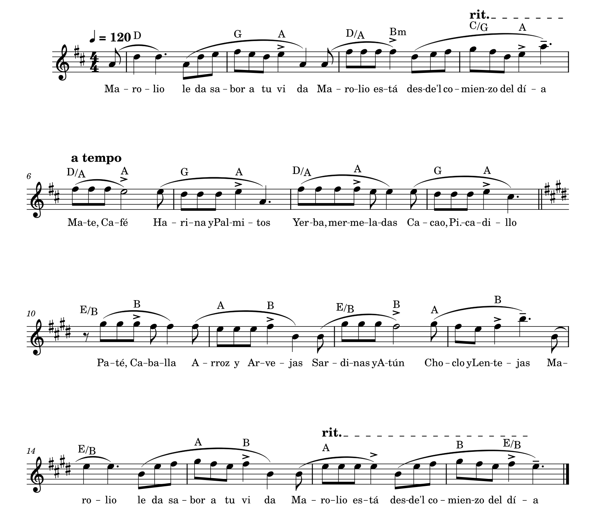

| Sistema | Compases | Tonalidad | Contenido / Células |
|---|---|---|---|
| Sistema 1 | c. 1 al 5 | Re Mayor (2#) | Intro: «Marolio le da sabor a tu vida... desde el comienzo del día» (Células 01 a 04) |
| Sistema 2 | c. 6 al 9 | Re Mayor (2#) | Productos 1 a 8: Mate, Café, Harina, Palmitos, Yerba, Mermelada, Cacao, Picadillo (Células 05 a 12) |
| Sistema 3 | c. 10 al 13 | Mi Mayor (4# - Modulación) | Productos 9 a 16: Paté, Caballa, Arroz, Arvejas, Sardinas, Atún, Choclo, Lentejas (Células 13 a 20) |
| Sistema 4 | c. 14 al 18 | Mi Mayor (4#) | Cierre: «Marolio le da sabor a tu vida... desde el comienzo del día» (Células 21 a 24) |
IN M es una lectura abierta del jingle de Marolio al estilo de In C (Terry Riley, 1964). La melodía original está transcripta nota a nota desde la partitura (18 compases, 24 células). Esas células son los módulos que después tres músicos virtuales recorren a su propio ritmo, escuchándose entre sí.
1 / 2 / 3
(o los botones Avanzar) le dicen a cada músico que pase a la siguiente célula.Espacio · iniciar / detenerEsc · parar1 / 2 / 3 · avanzar músico 1, 2, 3Abrir partitura original · imagen escaneada con la transcripción nota a nota, acordes y estructura por sistemas.
Repositorio: github.com/vlasvlasvlas/inmsynth
Toda la transcripción (alturas, ritmos, armonía, sílabas) está auditada desde
doc/partitura.png. El algoritmo del ensamble sigue las reglas de escucha mutua
que propuso Riley, con dispersión máxima aflojada a 4 células, phasing rítmico permanente por voz
y pausas condicionadas por fatiga, unísono prolongado o respiración de grupo.